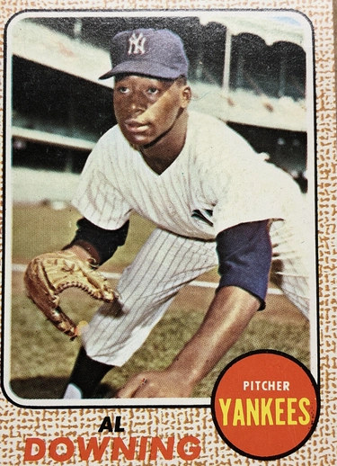

Al Downing
Career Highlights & Facts
(Facts are AI-generated and may require verification)
- Selected as an All-Star during a season where 4.5 WAR was recorded.
- Earned Comeback Player of the Year honors after moving to a new league.
- Delivered the pitch that allowed a legendary slugger to break the all-time career home run record.
Would you like to find out more about Al Downing?
This bio is not assigned. Want to write a SABR bio? Contact
bioproject@sabr.org
.
Full Name
Alphonso Erwin Downing
Born
June 28, 1941 at Trenton, NJ (USA)
Stats
Baseball Reference
Retrosheet
Alphonso Erwin Downing is an American former professional baseball pitcher. He played in Major League Baseball for the New York Yankees, Oakland Athletics, Milwaukee Brewers, and Los Angeles Dodgers from 1961 through 1977. Downing was an All Star in 1967 and the National League's Comeback Player of the Year in 1971. Downing allowed Hank Aaron's record breaking 715th home run on April 8, 1974.
Career Totals
| WAR | W | L | ERA | G | GS | SV | IP | SO | WHIP |
|---|---|---|---|---|---|---|---|---|---|
| 21.0 | 123 | 107 | 3.22 | 405 | 317 | 3 | 2268.1 | 1639 | 1.269 |
Statistics via Baseball-Reference.com
The Original Clue